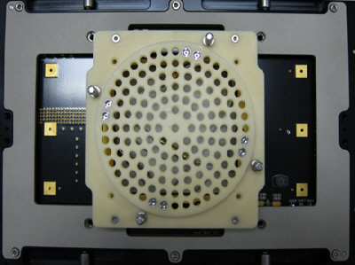
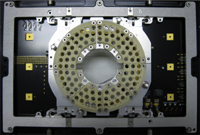
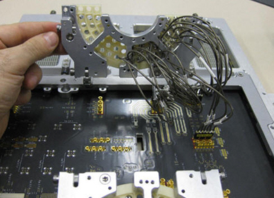

High-Density Port Scale RF solution
| Supported V93000 systems : Smart Scale (SmarTest 7), Pin Scale |
- the traditional PSRF solid adapter (N2394A), and the
- the PSRF segmented bridge adapter (N2494A).
The first is the traditional adapter and the latter is an enhanced design. The new design features many improvements based on customer feedback.
PSRF solid adapter and stiffener inlay
The first graphic shows the stiffener inlay for the traditional solid RF adapter:

PSRF segmented bridge adapter and stiffener inlay
The improved segmented bridge solution provides better handling and better accessibility. The graphics below show the stiffener inlay for the PSRF segmented bridge adapter and the how the open bridge gives access to the wiring underneath.


The key components of the segmented solution are
- segmented bridge adapter
- improved (slim) stiffener inlays
- multiport mini coax connectors
- cables and multiport cable sets
The advantages of this design are
- larger available keep-out area
- backward compatibility with the traditional solid adapter and stiffener inlay
- support of up to 96 RF ports when using the PSRF segmented bridge adapter
Functional changes
- Introduced in SmarTest 6.5.3